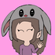
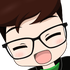

Streamers
Vondross:
Leo (Vondross): Es un vago de 23 años que vive en mar del plata, le gusta hacer directo a diario en twitch, gran parte de su contenido se basa en el juego conocido como: Albion Online. Pero tambien juega otros juegos como valorant, multiversus, entre otros.
Abbeyroads: 
Abbeyroads: Es una chica de 18 años que le gusta hacer directos casuales, hace directos del juego que esta jugando, sin importar cual sea, aunque por lo general también juega valorant, League of Legends, y cada tanto Genshin Impact.
Ghaladeon: 
Ghaladeon: Es un vago argentino que se fue a vivir a españa hace años, Ghala prende directo cuando no esta trabajando, asi como Leo tambien le gusta jugar al Albion Online, pero mas que nada hace directo de musica haciendo remix creados por el.
Firespirit:
Firespirit: Es un vago de 22 años, que vive en Corrientes, Capital, hace directos casi a diario, sobre todo de Valorant y League of Legends, pero tambien hace muchos directos de juegos variados, sobre todo del estilo roguelike.